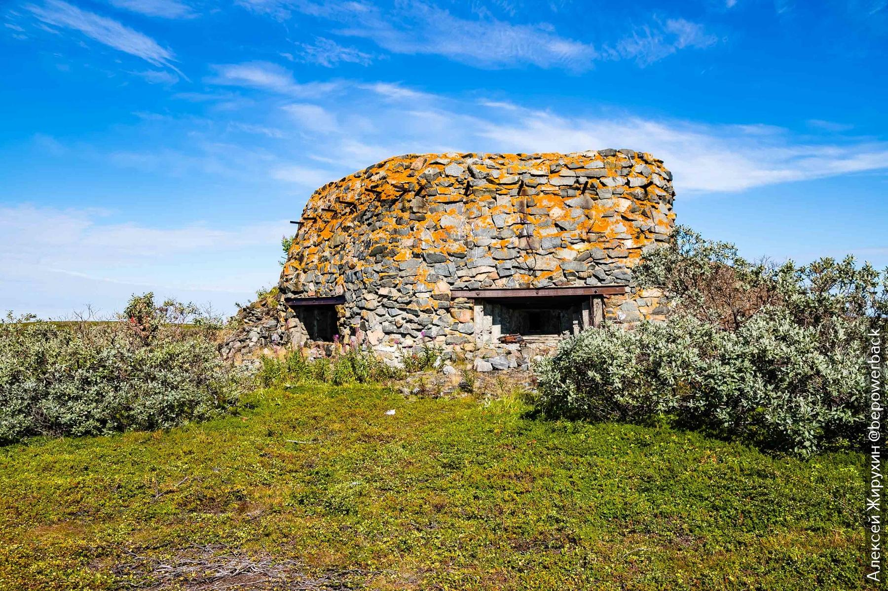
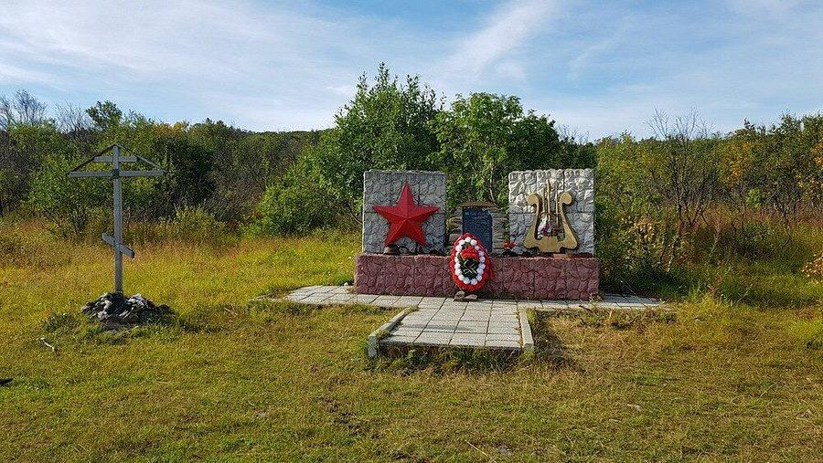
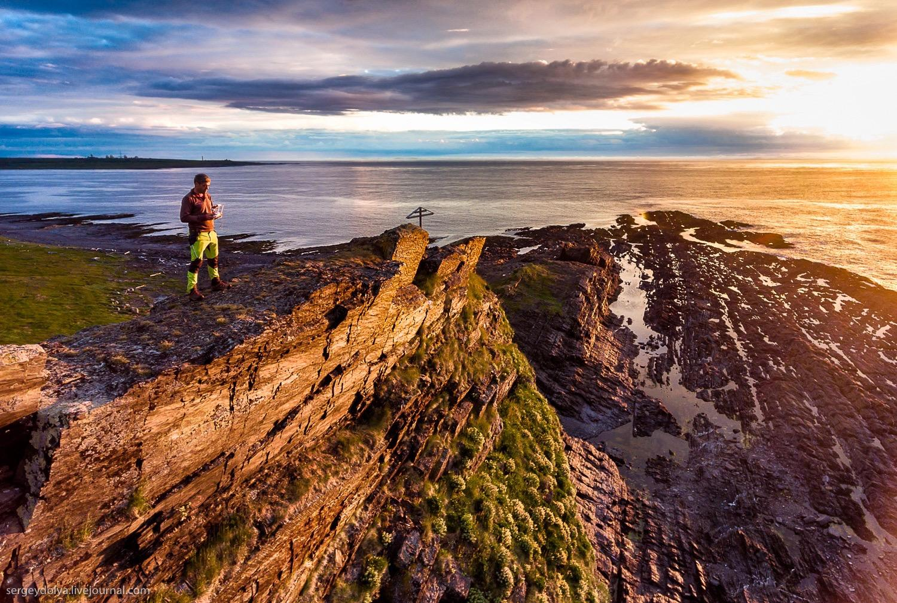
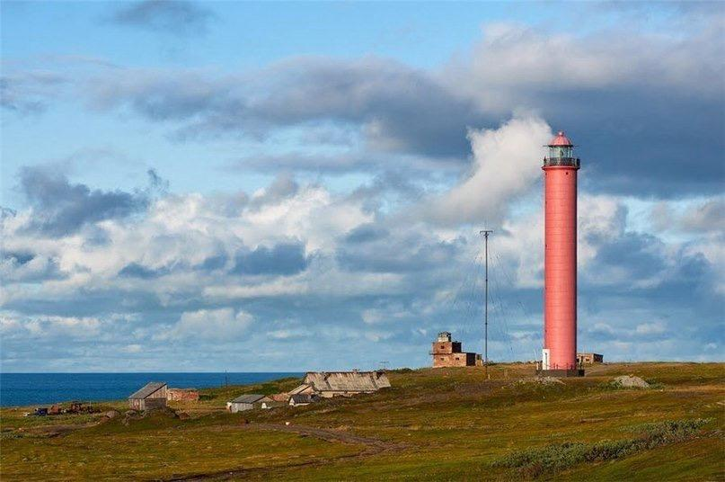

Два полуострова на крайнем севере Кольского — хранители памяти Великой Отечественной и самая северная точка европейской России. Суровые скалы, бескрайнее море и ощущение настоящего края земли.

Средний хранит память о Великой Отечественной войне. Здесь до сих пор сохранились укрепления, разрушенные доты, артиллерийские батареи. На орудиях заметны следы боя — выбитые звёзды на стволах. В 1941 году за каждую скалу и каждый метр земли шли ожесточённые сражения. Необычная точка маршрута — землянка, где в годы войны жили и писали фронтовые корреспонденты. Сегодня она восстановлена.


Самая северная точка полуострова Рыбачий — мыс Немецкий. Это крайняя точка Европейской части России, где Баренцево море открывается во всей своей мощи. Здесь стоит действующий маяк, построенный ещё в довоенное время. Его силуэт на фоне скал и моря выглядит особенно впечатляюще. Ради вида на бескрайние просторы, шума волн и ощущения края земли стоит ехать сюда.
Знаковое место Рыбачьего — скальные останцы, которые возвышаются прямо из моря. Эти каменные «пальцы» образовались в результате выветривания и выглядят особенно эффектно при сильном волнении. В ясную погоду они видны издалека, а в туман кажутся мистическими фигурами, вырастающими из воды.